The role of C++ in the Python ecosystem: the case of the Qt framework.
Dr. Cristián Maureira-Fredes
@cmaureir


Extending Python
Which language
should we use?
We need to talk about
Surveys and Indexes
TIOBE Index July 2025
The world runs on

Don't be afraid
C++ is closer
than you might expect
Tensorflow
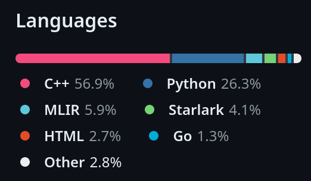PyTorch
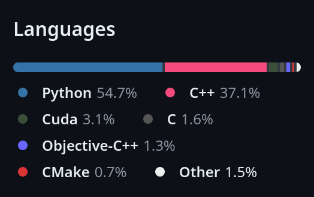Ray
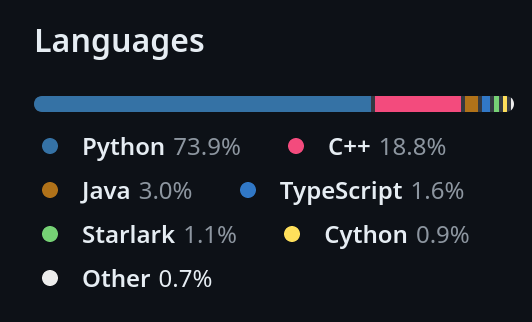SciPy
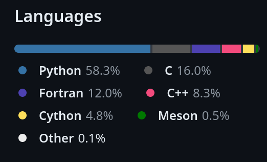NumPy
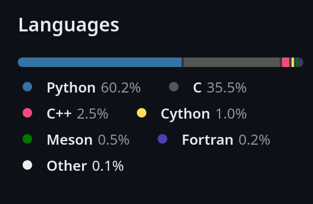C++ has the bad reputation
of being a difficult language
Python & C++
# No imports
class Rectangle:
def __init__(self, width: int, height: int):
self.width : int = width
self.height : int = height
def set_values(self, x: int, y: int):
self.width = x
self.height = y
def area(self) -> int:
return self.width * self.height
def main():
rect = Rectangle()
rect.set_values(3,4);
print(f"area: {rect.area()}")
#include <iostream>
using namespace std;
class Rectangle {
public:
int width, height;
void set_values(int x, int y) {
width = x;
height = y;
}
int area() {
return width*height;
}
};
int main () {
Rectangle rect;
rect.set_values(3,4);
cout << "area: " << rect.area();
return 0;
}
C++ is closer to Python (1/4)
#include <string>
float add(int x, int y) {
return x + y;
}
int main()
{
auto a = 1 + 2; // a is an int
auto b = add(1, 2); // b is a float
auto n = {5}; // n is a std::initializerlist<int>
auto s1 = "hello"; // s1 is a const char *
auto s2 = "hello"s; // s2 is a std::string
return 0;
}
auto since C++11
C++ is closer to Python (2/4)
#include <iostream>
#include <ranges>
int main()
{
auto values = {0, 1, 2, 3, 4, 5};
for (auto i : values)
std::cout << i << ' ';
return 0;
}
ranges since C++20
C++ is closer to Python (3/4)
#include <iostream>
#include <ranges>
int main()
{
constexpr static auto v = {'A', 'B', 'C', 'D'};
for (auto const [index, letter] : std::views::enumerate(v))
std::cout << '(' << index << ':' << letter << ") ";
std::cout << '\n';
return 0;
}
std::view::enumerate since C++23
C++ is closer to Python (4/4)
#include <print>
int main()
{
std::print("{0} {2}{1}!\n", "Hello", 23, "C++");
return 0;
}
std::print since C++23
Even with these examples
Who thinks Python is simpler?
f = lambda x, m: x + m(x)
*s,='abcde'
SuperList = type(
"SuperList",
(list, ),
dict(
y=42,
hidden=lambda _, x: x.upper() if x*0=="" else x
)
)
l = SuperList()
l.append(100)
print(l.hidden("Hello"))
_="_=%r;print(_%%_)";print(_%_)
22>>i&1
n&~-n<1
K1FNr1hQ=K*KN;K
but that's Pyth not Python
pyth.readthedocs.ioLanguages can be
Simple and Complicated
OK, but...
What's the deal with Qt
Like Python,
Qt is around since
the early '90s
Python and Qt share similar goals:
Simple, useful and batteries included.
Qt Essentials
| Core | D-Bus | GUI | Network |
| QML | Quick | Quick Controls | Quick Dialogs |
| Quick Layouts | Quick Test | Test | Widgets |
Qt Add-ons
| Active Qt | 3D | Bluetooth | Concurrent |
| Help | Image Formats | Multimedia | NFC |
| OPC UA | OpenGL | Positioning | |
| Print Support | Quick Widgets | Quick Effects | Quick Particles |
| Remote Objects | SCXML | Sensors | Serial Bus |
| Serial Port | Shader Tools | SpatialAudio | SQL |
| StateMachine | SVG | TextToSpeech | UI Tools |
| WebChannel | WebEngine | WebSockets | WebView |
| XML | Charts | CoAP | Data Visualization |
| Lottie Animation | MQTT | Network Authorization | Quick 3D |
| Quick 3D Physics | Quick Timeline | Virtual Keyboard | Wayland Compositor |
| HTTP Server | Protobuf | Graphs | GRPC |
| Qt OpCUA | Qt MQTT | Qt CoAP | Location |
| Qt Automotive Suite | Qt for MCU | Qt for Device Creation |
Thanks the for info, but...
we are at PyConPT?
Qt has Python bindings 🎉
...well two
PySide
- Developed by The Qt Company
- LGPLv3/Commercial
- Support Windows, macOS and Linux.
- Support for Android + Deployment
- Exposes Qt API and more.
PyQt
- Developed by Riverbank Co.
- GPLv3/Commercial
- Support Windows, macOS and Linux.
- Support for Android + Deployment
- Exposes Qt API.
What's and more ?
You are only onepip install pyside6
away to discover it
New ad-hoc API
PySide extends the Qt API in order to enable other projects to use functionality easily.
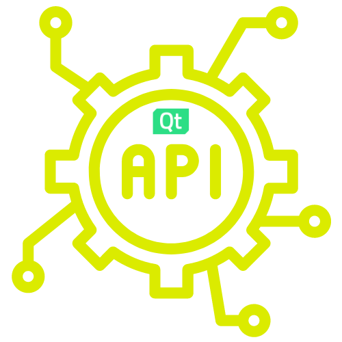

Numpy Support
Accept numpy arrays wherever we accept a Python Sequence
Tooling to manage projects
% pyside6-project -h
usage: project.py [-h] [--quiet] [--dry-run] [--force] [--qml-module]
{build,run,clean,qmllint,deploy,lupdate,new-quick,new-ui,new-widget} [file]
positional arguments:
{build,run,clean,qmllint,deploy,lupdate,new-quick,new-ui,new-widget}
build Builds the project
run Builds the project and runs the first file
clean Cleans the build artifacts
qmllint Runs the qmllint tool
deploy Deploys the application
lupdate Updates translation (.ts) files
new-ui Creates a new QtWidgets project with a Qt Designer-based main window
new-widget Creates a new QtWidgets project with a main window
new-quick Creates a new QtQuick project
file Project file
options:
-h, --help show this help message and exit
--quiet, -q Quiet
--dry-run, -n Only print commands
--force, -f Force rebuild
--qml-module, -Q Perform check for QML module
Tooling: Deployment
Based on Nuitka (nuitka.dev
The __feature__ option
# Common Qt structure
# - Using setter/getter
# - No writable properties
table = QTableWidget()
table.setColumnCount(2)
button = QPushButton("Add")
button.setEnabled(False)
layout = QVBoxLayout()
layout.addWidget(table)
layout.addWidget(button)
from __feature__ import (
snake_case, true_property
)
table = QTableWidget()
table.column_count = 2
button = QPushButton("Add")
button.enabled = False
layout = QVBoxLayout()
layout.add_widget(table)
layout.add_widget(button)
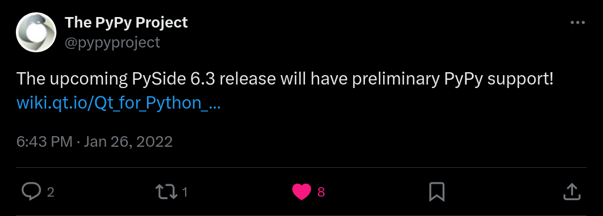
Latest release for 6.5.0 and PyPy 3.9
arm64 packages
- Universal binaries wheel (macOS)
- Packages for aarch64 (Linux)
- Packages for Windows on ARM (WoA)
Android support
With the help of pyside6-deploy-android
iOS
Currently being researched 👩🔬
AsyncIO support*
What about other UI frameworks?
Kivy
- kivy.org
- Android, iOS, Linux, macOS and Windows.
- MIT License
from kivy.app import App
from kivy.uix.button import Button
class TestApp(App):
def build(self):
button = Button(text='Hello World')
button.bind(on_press=self.callback)
return button
def callback(self, instance):
print(instance.text)
TestApp().run()
Flet
- flet.dev
- Android, iOS, Linux, macOS and Windows.
- Apache 2.0 License
import flet as ft
def main(page: ft.Page):
page.add(
ft.SafeArea(
ft.Text("Hello, Flet!")
)
)
ft.app(main)
Toga
- beeware.org
- Windows, macOS, and Linux. (*)
- BSD-3 Clause license
from toga import Button, App
def callback(widget):
print("hello")
def build(app):
button = Button('Hello world',
on_press=callback)
return button
App(startup=build).main_loop()
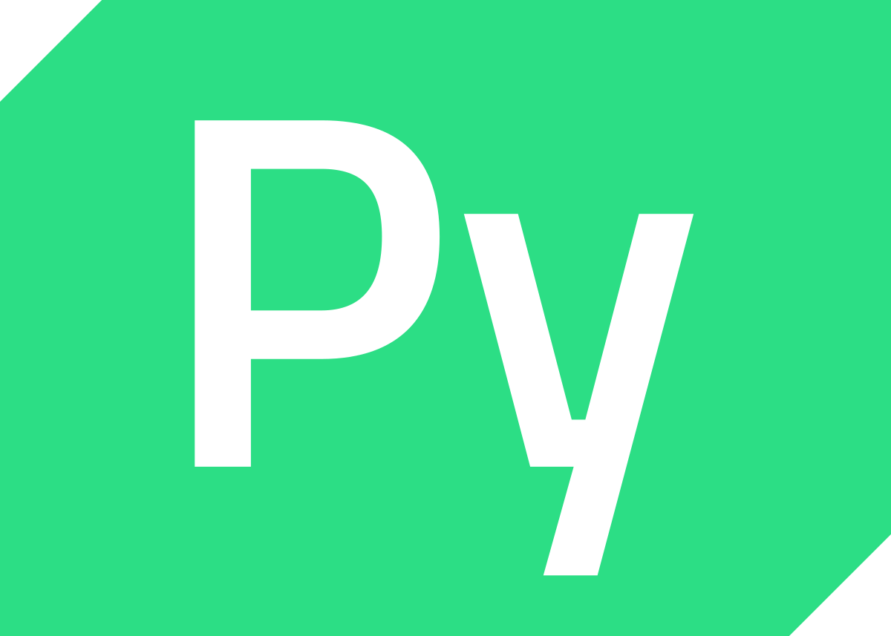
PySide6
- doc.qt.io/qtforpython
- Windows, macOS, Linux, and Android
- LGPLv3 License
from PySide6.QtWidgets import (
QApplication, QLabel
)
app = QApplication()
label = QLabel("Hello World")
label.show()
app.exec()
But
How are the bindings generated?
Generation process
Let's look a couple of examples
pybind11 (C++)
#include <pybind11/pybind11.h>
int add(int i, int j) {
return i + j;
}
PYBIND11_MODULE(example, m) {
// optional module docstring
m.doc() = "pybind11 example plugin";
m.def("add", &add,
"A function that adds two numbers");
}
$ c++ -O3 -Wall -shared -std=c++11 \
-fPIC $(python3 -m pybind11 --includes) example.cpp \
-o example$(python3-config --extension-suffix)
shiboken (C++)
// test.cpp
#include <test.hpp>
int add(int i, int j) {
return i + j;
}
// test.hpp
int add(int i, int j);
<!-- bindings.xml -->
<?xml version="1.0"?>
<typesystem package="simple">
<function signature="add(int, int)"/>
</typesystem>
$ cmake -S . -B build
$ cmake --build build
$ cmake --install build
doc.qt.io/qtforpython-6/shiboken6/index.html
there are many more
- nanobind - github.com/wjakob/nanobind
- SIP - github.com/Python-SIP/sip
- boost::python - boostorg.github.io/python
- SWIG - swig.org
Check them out!
a few
Technical details
Limited API Compatibility
- Avoid dependency with one Python version (
cp36-abi3) - Stable ABI
- Reduce release overhead 😮💨
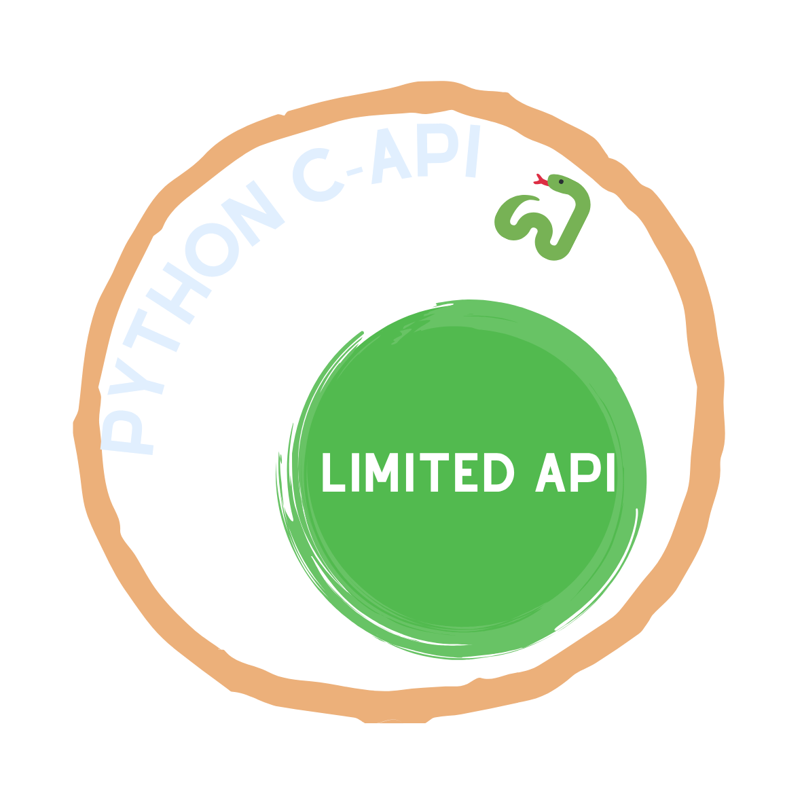
Build system & Packaging
🥲
- Check the last two talks from Henry Fredrick Schreiner III (PyConUS23/24)
- or other pybind11, scikit-build talks.
So what can be done with
Qt for Python
Example: Python app (widgets)
Example: Python app (QML)
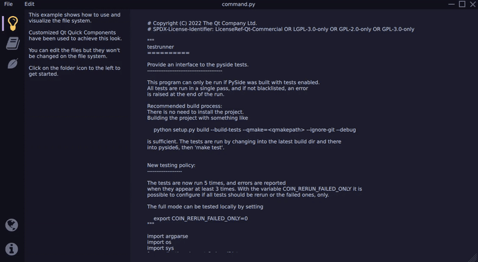Example: Python app (QML)
Example: Python app (QML)
Example: Hybrid Applications (Python and C++)
Embedding Python into a Qt/C++ application
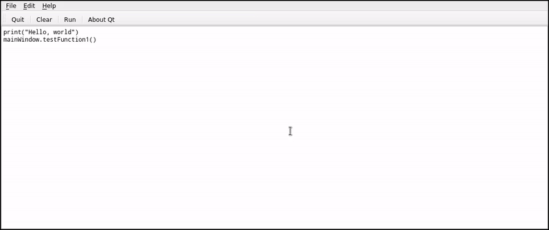
Wanna learn more?
- Telegram t.me/qtforpython
- Wiki page pyside.org
- Official docs doc.qt.io/qtforpython
Q&A
The role of C++ in the Python ecosystem: the case of the Qt framework.
Dr. Cristián Maureira-Fredes
@cmaureir